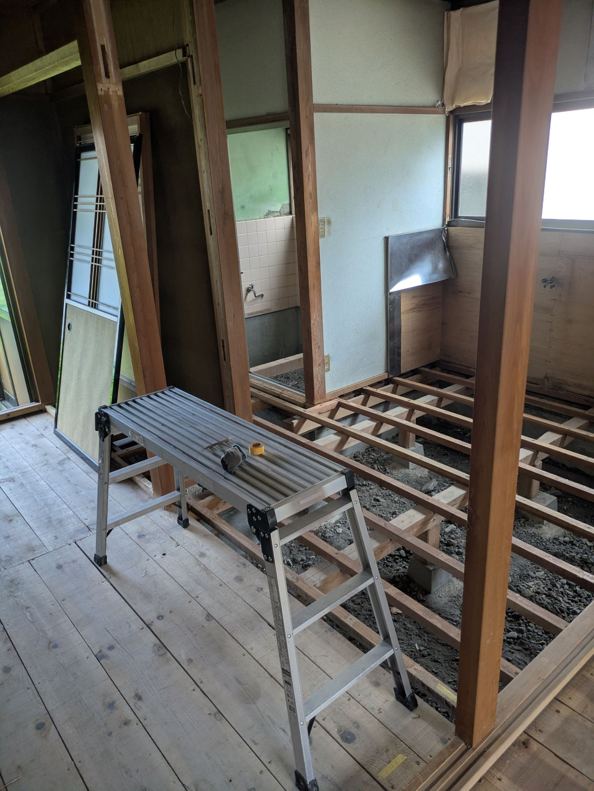

アキヤドおまかせプラン
初期費用 改 修・家 具などの初期費用は、 アキヤドが ほぼ 全額を 負担 し ます。 受け取り方 毎月、 決まった 額の家賃 例：毎月 3万円 （一定）
手間も お金も かけずに 空き家を 活 かしたい 毎月の 収入を 安定 させたい
家は


How it works


How much?
受け取り方は
繁忙期の
物件に
現地調査の
Simulation
おまかせプランは、
この試算は、架空のモデル物件でのシミュレーション
Risk
建物の
10
旅行者が
Message


それでも、清掃を地域の方にお願いし、セルフチェックインなどの仕組みを整えたことで、いまは現地に行くのは数か月に<
空き家は、手を入れれば旅をする人の滞在先になり、まちに人の流れを生み
★4.88
和モダンな 室内が とても オシャレで、 快適 で した！
お部屋の居心地が よく、 下田旅行の 素敵な 思い出に なり ま した。
Plans
条件は
契約は
Compare
実際の
Flow
FAQ
ご希望を
現地調査と
近隣への
しつこい